CODING AGENTS AS PIXEL WORLD MODELS
traex/DeepSeek-V4.1-Flash · instance_preservation_0020
点击播放 · 原生 RGB 像素
逐轮保存的候选
回放视频、检查图与代码变化。
每份候选均可单独播放。实际图片检查记录在下方工具轨迹中。
候选 01播放与检查图
点击播放 · 原生 RGB 像素
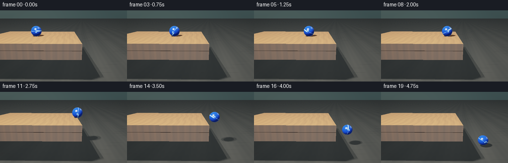
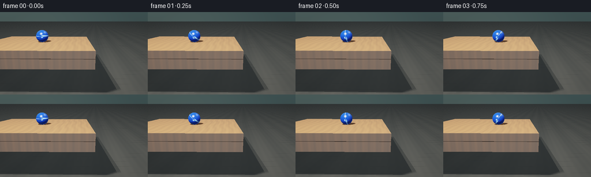
展开代码变化
--- 上一保存版本
+++ 本次保存版本
@@ -0,0 +1,387 @@
+from pathlib import Path
+
+import numpy as np
+from PIL import Image
+
+import artifact_io
+
+
+ROOT = Path(__file__).resolve().parent
+WIDTH, HEIGHT, FRAME_COUNT, FPS = 256, 144, 20, 4.0
+SSAA = 2
+
+TABLE_LO = np.array([-2.75, -0.18, -1.55])
+TABLE_HI = np.array([0.42, 0.00, 1.48])
+APRON_LO = np.array([-2.75, -0.43, 1.15])
+APRON_HI = np.array([0.42, -0.18, 1.47])
+LEGS = (
+ (np.array([-2.28, -1.10, -1.02]), np.array([-2.04, -0.18, -0.75])),
+ (np.array([0.02, -1.10, -1.02]), np.array([0.26, -0.18, -0.75])),
+)
+FLOOR_Y = -1.10
+BALL_RADIUS = 0.185
+EDGE_X = TABLE_HI[0]
+BALL_Z = 0.10
+
+LIGHT_POS = np.array([-1.55, 3.15, 2.65])
+EPS = 1.0e-4
+
+
+def normalized(vector):
+ return vector / np.linalg.norm(vector)
+
+
+CAM_POS = np.array([0.00, 0.63, 4.55])
+CAM_TARGET = np.array([-0.08, -0.38, 0.00])
+CAM_FORWARD = normalized(CAM_TARGET - CAM_POS)
+CAM_RIGHT = normalized(np.cross(CAM_FORWARD, np.array([0.0, 1.0, 0.0])))
+CAM_UP = np.cross(CAM_RIGHT, CAM_FORWARD)
+TAN_HALF_FOV = np.tan(np.deg2rad(16.0))
+
+
+def smoothstep(edge0, edge1, value):
+ value = np.clip((value - edge0) / (edge1 - edge0), 0.0, 1.0)
+ return value * value * (3.0 - 2.0 * value)
+
+
+def camera_rays(width, height):
+ xs = (np.arange(width, dtype=np.float32) + 0.5) / width * 2.0 - 1.0
+ ys = 1.0 - (np.arange(height, dtype=np.float32) + 0.5) / height * 2.0
+ xx, yy = np.meshgrid(xs, ys)
+ directions = (
+ CAM_FORWARD[None, None, :]
+ + xx[:, :, None] * TAN_HALF_FOV * (width / height) * CAM_RIGHT[None, None, :]
+ + yy[:, :, None] * TAN_HALF_FOV * CAM_UP[None, None, :]
+ )
+ directions /= np.linalg.norm(directions, axis=2, keepdims=True)
+ origins = np.broadcast_to(CAM_POS.astype(np.float32), directions.shape)
+ return origins, directions
+
+
+def intersect_sphere(origins, directions, center, radius, scale=(1.0, 1.0, 1.0)):
+ scale = np.asarray(scale, dtype=np.float32)
+ local_origin = (origins - center.astype(np.float32)) / scale
+ local_direction = directions / scale
+ a = np.sum(local_direction * local_direction, axis=2)
+ b = 2.0 * np.sum(local_origin * local_direction, axis=2)
+ c = np.sum(local_origin * local_origin, axis=2) - radius * radius
+ discriminant = b * b - 4.0 * a * c
+ valid = discriminant > 0.0
+ root = np.sqrt(np.maximum(discriminant, 0.0))
+ t_near = (-b - root) / (2.0 * a)
+ hit = valid & (t_near > EPS)
+ points = origins + directions * t_near[:, :, None]
+ local_points = (points - center.astype(np.float32)) / scale
+ normals = local_points / (scale * scale)
+ normals /= np.maximum(np.linalg.norm(normals, axis=2, keepdims=True), EPS)
+ return hit, t_near, normals
+
+
+def intersect_box(origins, directions, lower, upper):
+ lower = lower.astype(np.float32)
+ upper = upper.astype(np.float32)
+ safe_direction = np.where(np.abs(directions) > 1.0e-9, directions, 1.0e-9)
+ t0 = (lower[None, None, :] - origins) / safe_direction
+ t1 = (upper[None, None, :] - origins) / safe_direction
+ t_low = np.minimum(t0, t1)
+ t_high = np.maximum(t0, t1)
+ t_near = np.max(t_low, axis=2)
+ t_far = np.min(t_high, axis=2)
+ hit = (t_far >= np.maximum(t_near, 0.0)) & (t_near > EPS)
+
+ axis = np.argmax(t_low, axis=2)
+ sign = np.sign(np.take_along_axis(directions, axis[:, :, None], axis=2)[:, :, 0])
+ normals = np.zeros_like(directions, dtype=np.float32)
+ for component in range(3):
+ mask = axis == component
+ normals[:, :, component] = np.where(mask, -sign, 0.0)
+ return hit, t_near, normals
+
+
+def intersect_floor(origins, directions):
+ safe_direction = np.where(np.abs(directions[:, :, 1]) > 1.0e-9, directions[:, :, 1], -1.0e-9)
+ t = (FLOOR_Y - origins[:, :, 1]) / safe_direction
+ hit = (t > EPS) & (directions[:, :, 1] < -1.0e-9)
+ normals = np.zeros_like(directions, dtype=np.float32)
+ normals[:, :, 1] = 1.0
+ return hit, t, normals
+
+
+def trace_scene(origins, directions, ball_center, ball_scale):
+ best_t = np.full(directions.shape[:2], np.inf, dtype=np.float32)
+ object_id = np.full(directions.shape[:2], -1, dtype=np.int8)
+ normals = np.zeros_like(directions, dtype=np.float32)
+
+ def merge(hit, t, normal, identifier):
+ nonlocal best_t, object_id, normals
+ mask = hit & (t < best_t)
+ best_t = np.where(mask, t, best_t)
+ object_id = np.where(mask, identifier, object_id)
+ normals = np.where(mask[:, :, None], normal, normals)
+
+ hit, t, normal = intersect_sphere(
+ origins, directions, ball_center, BALL_RADIUS, ball_scale
+ )
+ merge(hit, t, normal, 1)
+
+ hit, t, normal = intersect_box(origins, directions, TABLE_LO, TABLE_HI)
+ merge(hit, t, normal, 2)
+
+ hit, t, normal = intersect_box(origins, directions, APRON_LO, APRON_HI)
+ merge(hit, t, normal, 3)
+
+ for index, (lower, upper) in enumerate(LEGS):
+ hit, t, normal = intersect_box(origins, directions, lower, upper)
+ merge(hit, t, normal, 4 + index)
+
+ hit, t, normal = intersect_floor(origins, directions)
+ merge(hit, t, normal, 6)
+ return best_t, object_id, normals
+
+
+def is_occluded(origins, directions, max_distance, ball_center, ball_scale):
+ occluded = np.zeros(origins.shape[:2], dtype=bool)
+ hit, t, _ = intersect_sphere(origins, directions, ball_center, BALL_RADIUS, ball_scale)
+ occluded |= hit & (t < max_distance)
+ for lower, upper in ((TABLE_LO, TABLE_HI), (APRON_LO, APRON_HI), *LEGS):
+ hit, t, _ = intersect_box(origins, directions, lower, upper)
+ occluded |= hit & (t < max_distance)
+ return occluded
+
+
+def soft_visibility(points, normals, ball_center, ball_scale):
+ point_count = points.shape[0]
+ points = points.reshape(1, point_count, 3)
+ normals = normals.reshape(1, point_count, 3)
+ visibility = np.zeros(points.shape[:2], dtype=np.float32)
+ offsets = (
+ np.array([-0.16, 0.00, -0.10]),
+ np.array([0.16, 0.00, -0.10]),
+ np.array([-0.16, 0.00, 0.10]),
+ np.array([0.16, 0.00, 0.10]),
+ )
+ for offset in offsets:
+ light_vector = LIGHT_POS + offset - points
+ distance = np.linalg.norm(light_vector, axis=2)
+ light_direction = light_vector / np.maximum(distance[:, :, None], EPS)
+ shadow_origin = points + normals * 0.006
+ visibility += (~is_occluded(
+ shadow_origin, light_direction, distance - 0.01, ball_center, ball_scale
+ )).astype(np.float32)
+ return (visibility * 0.25).reshape(point_count)
+
+
+def environment_color(directions):
+ up = np.clip(directions[:, :, 1] * 0.5 + 0.5, 0.0, 1.0)
+ low = np.array([0.018, 0.028, 0.030], dtype=np.float32)
+ high = np.array([0.085, 0.125, 0.125], dtype=np.float32)
+ color = low[None, None, :] * (1.0 - up[:, :, None]) + high[None, None, :] * up[:, :, None]
+ glow = np.exp(-((directions[:, :, 0] + 0.42) / 0.55) ** 2) * 0.025
+ color += glow[:, :, None] * np.array([0.75, 0.78, 0.62], dtype=np.float32)
+ return color
+
+
+def shade_surface(
+ points,
+ directions,
+ normals,
+ object_id,
+ visibility,
+ ball_center,
+ ball_rotation,
+):
+ color = np.zeros_like(points, dtype=np.float32)
+ light_vector = LIGHT_POS[None, None, :] - points
+ light_distance = np.linalg.norm(light_vector, axis=2)
+ light_direction = light_vector / np.maximum(light_distance[:, :, None], EPS)
+ view_direction = -directions
+ n_dot_l = np.maximum(np.sum(normals * light_direction, axis=2), 0.0)
+ half_vector = light_direction + view_direction
+ half_vector /= np.maximum(np.linalg.norm(half_vector, axis=2, keepdims=True), EPS)
+ n_dot_h = np.maximum(np.sum(normals * half_vector, axis=2), 0.0)
+ n_dot_v = np.maximum(np.sum(normals * view_direction, axis=2), 0.0)
+ hemisphere = 0.5 + 0.5 * normals[:, :, 1]
+ ambient = 0.17 + 0.15 * hemisphere
+
+ table_mask = (object_id == 2) | (object_id == 3) | (object_id == 4) | (object_id == 5)
+ floor_mask = object_id == 6
+ ball_mask = object_id == 1
+
+ if np.any(table_mask):
+ grain = (
+ 0.52
+ + 0.18 * np.sin(points[:, :, 0] * 31.0 + 1.2 * np.sin(points[:, :, 2] * 4.5))
+ + 0.08 * np.sin(points[:, :, 0] * 73.0 + points[:, :, 2] * 2.1)
+ )
+ top = normals[:, :, 1] > 0.5
+ wood = np.empty_like(points)
+ wood[:, :, 0] = np.where(top, 0.235, 0.105) * (0.76 + 0.42 * grain)
+ wood[:, :, 1] = np.where(top, 0.105, 0.047) * (0.78 + 0.38 * grain)
+ wood[:, :, 2] = np.where(top, 0.032, 0.015) * (0.80 + 0.32 * grain)
+ table_light = ambient + n_dot_l * visibility * 2.35
+ table_color = wood * table_light[:, :, None]
+ table_color += (
+ np.array([0.055, 0.075, 0.085], dtype=np.float32)[None, None, :]
+ * (0.25 + 0.75 * visibility[:, :, None])
+ )
+ table_color += (n_dot_h ** 24 * 0.075 * visibility)[:, :, None]
+ color = np.where(table_mask[:, :, None], table_color, color)
+
+ if np.any(floor_mask):
+ board = (
+ 0.50
+ + 0.18 * np.sin(points[:, :, 0] * 5.6 + points[:, :, 2] * 0.7)
+ + 0.06 * np.sin(points[:, :, 0] * 29.0 + points[:, :, 2] * 3.0)
+ )
+ seam = smoothstep(0.018, 0.055, np.abs(np.sin(points[:, :, 2] * 8.4)))
+ floor_base = np.stack(
+ (
+ 0.055 * (0.70 + 0.34 * board),
+ 0.052 * (0.72 + 0.32 * board),
+ 0.046 * (0.72 + 0.30 * board),
+ ),
+ axis=2,
+ )
+ floor_base *= (0.82 + 0.18 * seam)[:, :, None]
+ floor_light = ambient + n_dot_l * visibility * 1.55
+ floor_color = floor_base * floor_light[:, :, None]
+ floor_color += np.array([0.022, 0.027, 0.029], dtype=np.float32)[None, None, :]
+ floor_color += (n_dot_h ** 36 * 0.09 * visibility)[:, :, None]
+ color = np.where(floor_mask[:, :, None], floor_color, color)
+
+ if np.any(ball_mask):
+ relative = (points - ball_center[None, None, :]) / BALL_RADIUS
+ cosine, sine = np.cos(-ball_rotation), np.sin(-ball_rotation)
+ local_x = cosine * relative[:, :, 0] - sine * relative[:, :, 1]
+ local_y = sine * relative[:, :, 0] + cosine * relative[:, :, 1]
+ local_z = relative[:, :, 2]
+ longitude = np.arctan2(local_y, local_x)
+ stripe_center = 0.17 * np.sin(2.0 * longitude + 0.35)
+ stripe = 1.0 - smoothstep(0.035, 0.075, np.abs(local_y - stripe_center))
+ seam = 1.0 - smoothstep(0.008, 0.020, np.abs(local_y - stripe_center))
+
+ base_blue = np.array([0.010, 0.060, 0.410], dtype=np.float32)
+ stripe_blue = np.array([0.25, 0.52, 0.96], dtype=np.float32)
+ ball_base = base_blue[None, None, :] * (1.0 - stripe[:, :, None])
+ ball_base += stripe_blue[None, None, :] * stripe[:, :, None]
+ ball_base *= (0.90 + 0.10 * local_z)[:, :, None]
+ ball_base += np.array([0.030, 0.010, 0.000], dtype=np.float32)[None, None, :] * seam[:, :, None]
+
+ diffuse = ambient + n_dot_l * visibility * 2.20
+ ball_color = ball_base * diffuse[:, :, None]
+ highlight = n_dot_h ** 105 * visibility * 1.75
+ fill_half = np.maximum(
+ np.sum(
+ normals
+ * normalized(np.array([0.55, 0.65, 0.50], dtype=np.float32))[None, None, :],
+ axis=2,
+ ),
+ 0.0,
+ )
+ highlight += fill_half ** 65 * 0.24
+ ball_color += highlight[:, :, None] * np.array([0.78, 0.91, 1.0], dtype=np.float32)
+
+ reflected = directions - 2.0 * np.sum(directions * normals, axis=2, keepdims=True) * normals
+ reflected /= np.maximum(np.linalg.norm(reflected, axis=2, keepdims=True), EPS)
+ fresnel = 0.045 + 0.955 * (1.0 - n_dot_v) ** 5
+ reflected_sky = smoothstep(-0.2, 0.8, reflected[:, :, 1])
+ reflection = np.stack(
+ (
+ 0.025 + 0.30 * reflected_sky,
+ 0.040 + 0.45 * reflected_sky,
+ 0.055 + 0.55 * reflected_sky,
+ ),
+ axis=2,
+ )
+ ball_color += reflection * fresnel[:, :, None] * 0.62
+ rim = (1.0 - n_dot_v) ** 2.5 * 0.12
+ ball_color += rim[:, :, None] * np.array([0.08, 0.25, 0.85], dtype=np.float32)
+ color = np.where(ball_mask[:, :, None], ball_color, color)
+
+ return color
+
+
+def tonemap(color):
+ color = np.maximum(color, 0.0)
+ mapped = (color * (2.51 * color + 0.03)) / (color * (2.43 * color + 0.59) + 0.14)
+ mapped = np.clip(mapped, 0.0, 1.0)
+ return np.power(mapped, 1.0 / 2.2)
+
+
+def ball_state(frame_index):
+ if frame_index <= 12:
+ x = -1.05 + (frame_index / 12.0) * 1.60
+ y = BALL_RADIUS
+ falling_time = 0
+ else:
+ falling_time = frame_index - 12
+ x = EDGE_X + 0.13 + 0.115 * falling_time
+ y = BALL_RADIUS - 0.5 * 0.078 * falling_time * falling_time
+ floor_center = FLOOR_Y + BALL_RADIUS
+ if y < floor_center:
+ y = floor_center
+ if frame_index == 19:
+ y = FLOOR_Y + BALL_RADIUS + 0.075
+
+ if frame_index == 18:
+ scale = np.array([1.065, 0.905, 1.035], dtype=np.float32)
+ elif frame_index == 19:
+ scale = np.array([1.015, 0.985, 1.010], dtype=np.float32)
+ else:
+ scale = np.ones(3, dtype=np.float32)
+
+ rotation = -(x + 1.05) / BALL_RADIUS
+ return np.array([x, y, BALL_Z], dtype=np.float32), scale, rotation, falling_time
+
+
+def render_frame(frame_index, origins, directions):
+ ball_center, ball_scale, ball_rotation, _ = ball_state(frame_index)
+ depth, object_id, normals = trace_scene(
+ origins, directions, ball_center, ball_scale
+ )
+ points = origins + directions * np.where(np.isfinite(depth), depth, 0.0)[:, :, None]
+ visible_surface = object_id >= 0
+
+ visibility = np.zeros(object_id.shape, dtype=np.float32)
+ if np.any(visible_surface):
+ visibility[visible_surface] = soft_visibility(
+ points[visible_surface],
+ normals[visible_surface],
+ ball_center,
+ ball_scale,
+ )
+
+ color = shade_surface(
+ points,
+ directions,
+ normals,
+ object_id,
+ visibility,
+ ball_center,
+ ball_rotation,
+ )
+ background = environment_color(directions)
+ color = np.where(visible_surface[:, :, None], color, background)
+
+ vignette_x = (np.linspace(-1.0, 1.0, color.shape[1], dtype=np.float32))[None, :]
+ vignette_y = (np.linspace(-1.0, 1.0, color.shape[0], dtype=np.float32))[:, None]
+ vignette = 1.0 - 0.10 * np.clip(vignette_x * vignette_x + vignette_y * vignette_y, 0.0, 1.4)
+ color *= vignette[:, :, None]
+
+ image = (tonemap(color) * 255.0 + 0.5).astype(np.uint8)
+ image = Image.fromarray(image, mode="RGB").resize(
+ (WIDTH, HEIGHT), Image.Resampling.LANCZOS
+ )
+ return np.asarray(image, dtype=np.uint8)
+
+
+def main():
+ render_width, render_height = WIDTH * SSAA, HEIGHT * SSAA
+ origins, directions = camera_rays(render_width, render_height)
+ frames = [render_frame(index, origins, directions) for index in range(FRAME_COUNT)]
+ artifact_io.save(np.stack(frames), ROOT)
+ print(f"Wrote {FRAME_COUNT} frames to {ROOT}")
+
+
+if __name__ == "__main__":
+ main()
候选 02播放与检查图
点击播放 · 原生 RGB 像素

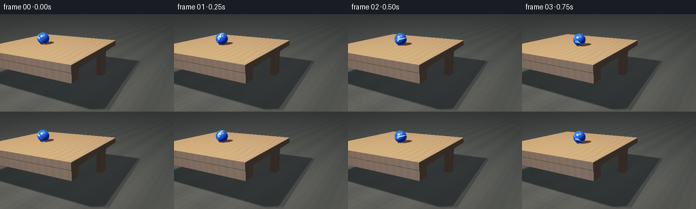
展开代码变化
--- 上一保存版本
+++ 本次保存版本
@@ -31,8 +31,8 @@
return vector / np.linalg.norm(vector)
-CAM_POS = np.array([0.00, 0.63, 4.55])
-CAM_TARGET = np.array([-0.08, -0.38, 0.00])
+CAM_POS = np.array([2.20, 1.15, 4.30])
+CAM_TARGET = np.array([0.05, -0.45, 0.00])
CAM_FORWARD = normalized(CAM_TARGET - CAM_POS)
CAM_RIGHT = normalized(np.cross(CAM_FORWARD, np.array([0.0, 1.0, 0.0])))
CAM_UP = np.cross(CAM_RIGHT, CAM_FORWARD)
@@ -309,23 +309,25 @@
def ball_state(frame_index):
- if frame_index <= 12:
- x = -1.05 + (frame_index / 12.0) * 1.60
+ if frame_index <= 11:
+ x = -1.45 + (frame_index / 11.0) * 2.00
y = BALL_RADIUS
falling_time = 0
else:
- falling_time = frame_index - 12
- x = EDGE_X + 0.13 + 0.115 * falling_time
- y = BALL_RADIUS - 0.5 * 0.078 * falling_time * falling_time
+ falling_time = frame_index - 11
+ x = EDGE_X + 0.14 + 0.145 * falling_time
+ y = BALL_RADIUS - 0.5 * 0.085 * falling_time * falling_time
floor_center = FLOOR_Y + BALL_RADIUS
if y < floor_center:
y = floor_center
+ if frame_index == 18:
+ y = FLOOR_Y + BALL_RADIUS + 0.075
if frame_index == 19:
- y = FLOOR_Y + BALL_RADIUS + 0.075
-
- if frame_index == 18:
+ y = FLOOR_Y + BALL_RADIUS
+
+ if frame_index == 17:
scale = np.array([1.065, 0.905, 1.035], dtype=np.float32)
- elif frame_index == 19:
+ elif frame_index == 18:
scale = np.array([1.015, 0.985, 1.010], dtype=np.float32)
else:
scale = np.ones(3, dtype=np.float32)
候选 03播放与检查图
点击播放 · 原生 RGB 像素

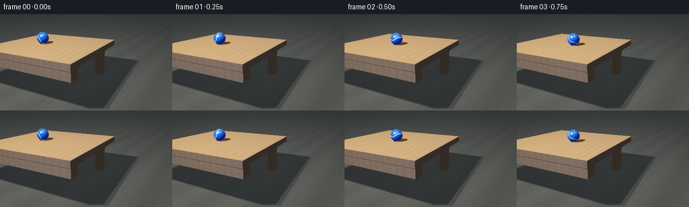
展开代码变化
--- 上一保存版本
+++ 本次保存版本
@@ -255,13 +255,13 @@
local_x = cosine * relative[:, :, 0] - sine * relative[:, :, 1]
local_y = sine * relative[:, :, 0] + cosine * relative[:, :, 1]
local_z = relative[:, :, 2]
- longitude = np.arctan2(local_y, local_x)
- stripe_center = 0.17 * np.sin(2.0 * longitude + 0.35)
- stripe = 1.0 - smoothstep(0.035, 0.075, np.abs(local_y - stripe_center))
+ latitude = np.arcsin(np.clip(local_z, -1.0, 1.0))
+ stripe_center = 0.21 * np.sin(2.0 * latitude + 0.70)
+ stripe = 1.0 - smoothstep(0.045, 0.090, np.abs(local_y - stripe_center))
seam = 1.0 - smoothstep(0.008, 0.020, np.abs(local_y - stripe_center))
- base_blue = np.array([0.010, 0.060, 0.410], dtype=np.float32)
- stripe_blue = np.array([0.25, 0.52, 0.96], dtype=np.float32)
+ base_blue = np.array([0.012, 0.080, 0.520], dtype=np.float32)
+ stripe_blue = np.array([0.36, 0.66, 1.00], dtype=np.float32)
ball_base = base_blue[None, None, :] * (1.0 - stripe[:, :, None])
ball_base += stripe_blue[None, None, :] * stripe[:, :, None]
ball_base *= (0.90 + 0.10 * local_z)[:, :, None]
@@ -371,7 +371,7 @@
color *= vignette[:, :, None]
image = (tonemap(color) * 255.0 + 0.5).astype(np.uint8)
- image = Image.fromarray(image, mode="RGB").resize(
+ image = Image.fromarray(image).resize(
(WIDTH, HEIGHT), Image.Resampling.LANCZOS
)
return np.asarray(image, dtype=np.uint8)
可观测工具轨迹
实际执行的命令与返回图片。
命令 1exit 0
/bin/bash -c "pwd && rg --files -g 'prompt.txt' -g 'GENERATION_RULES.md' -g 'task_spec.json' -g '"'!node_modules'"' -g '"'!vendor'"'"
命令 2exit 0
/bin/bash -c 'ls -la'
命令 3exit 0
/bin/bash -c 'git status --short'
命令 4exit 0
/bin/bash -c 'cat prompt.txt'
命令 5exit 0
/bin/bash -c 'cat GENERATION_RULES.md'
命令 6exit 0
/bin/bash -c 'cat task_spec.json'
命令 7exit 0
/bin/bash -c "sed -n '1,260p' artifact_io.py"
命令 8exit 0
/bin/bash -c "sed -n '1,260p' player_template.html"
命令 9exit 1
/bin/bash -c 'python generate.py'
命令 10exit 0
/bin/bash -c 'python generate.py'
命令 11exit 0
/bin/bash -c "python - <<'PY'
import numpy as np
def project(pos, target, pts, fov=16):
pos=np.array(pos,float); target=np.array(target,float)
f=target-pos; f/=np.linalg.norm(f)
r=np.cross(f,[0,1,0]); r/=np.linalg.norm(r)
u=np.cross(r,f)
th=np.tan(np.deg2rad(fov))
out=[]
for p in pts:
d=np.array(p)-pos
z=d@f
x=(d@r)/(z*th*(256/144))
y=(d@u)/(z*th)
out.append((round((x+1)/2*256), round((1-y)/2*144), round(z,2)))
return out
pts={'TL':[-2.75,0,1.48],'TR':[.42,0,1.48],'BR':[.42,0,-1.55],'BL':[-2.75,0,-1.55], 'ball_edge':[.42,.185,.1], 'ball_floor':[1.0,-.915,.1], 'floor_front':[1,-1.1,1.5], 'floor_left':[-2,-1.1,1.5]}
for cam,target in [([0,.63,4.55],[-.08,-.38,0]),([2.4,.9,4.5],[-.2,-.45,0]),([2.8,1.2,4.3],[-.1,-.5,0]),([2.4,1.0,3.8],[0,-.5,0]),([1.8,1.2,4.2],[-.2,-.55,0])]:
print('\\ncam',cam,target)
for k,v in pts.items(): print(k,project(cam,target,[v])[0])
PY"命令 12exit 0
/bin/bash -c "python - <<'PY'
import numpy as np
def project(pos, target, pts, fov=16):
pos=np.array(pos,float); target=np.array(target,float)
f=target-pos; f/=np.linalg.norm(f)
r=np.cross(f,[0,1,0]); r/=np.linalg.norm(r)
u=np.cross(r,f)
th=np.tan(np.deg2rad(fov))
out=[]
for p in pts:
d=np.array(p)-pos; z=d@f
x=(d@r)/(z*th*(256/144)); y=(d@u)/(z*th)
out.append((round((x+1)/2*256), round((1-y)/2*144)))
return out
pts={'TL':[-2.75,0,1.48],'TR':[.42,0,1.48],'BR':[.42,0,-1.55],'BL':[-2.75,0,-1.55], 'ball_start':[-1.05,.185,.1], 'ball_edge':[.42,.185,.1], 'ball_floor':[1.1,-.915,.1], 'floor_front':[1,-1.1,1.5], 'floor_left':[-2,-1.1,1.5]}
for cam,target in [([2.2,1.15,4.3],[.05,-.45,.0]),([2.5,1.15,4.2],[.0,-.45,.0]),([2.0,1.4,4.0],[.1,-.35,0]),([2.2,1.5,4.2],[.05,-.25,0]),([2.2,1.4,3.7],[.1,-.3,0])]:
print('\\ncam',cam,target)
for k,v in pts.items(): print(k,project(cam,target,[v])[0])
PY"命令 13exit 0
/bin/bash -c 'python generate.py'
命令 14exit 0
/bin/bash -c "sed -n '286,370p' generate.py"
命令 15exit 0
/bin/bash -c "python - <<'PY' import numpy as np from generate import CAM_POS, CAM_FORWARD, CAM_RIGHT, CAM_UP, TAN_HALF_FOV, ball_state for i in [0,5,10,11,12,13,14,15,16,17,18,19]: c,s,r,t=ball_state(i) d=c-CAM_POS; z=d@CAM_FORWARD x=(d@CAM_RIGHT)/(z*TAN_HALF_FOV*(256/144)); y=(d@CAM_UP)/(z*TAN_HALF_FOV) print(i,c, (round((x+1)/2*256),round((1-y)/2*144)), 'r_px',round(.185/(z*TAN_HALF_FOV)*72,1)) PY"
命令 16exit 0
/bin/bash -c "python - <<'PY'
from PIL import Image
im=Image.open('frames/16.png')
im.resize((1024,576), Image.Resampling.NEAREST).save('.tmp/f16_big.png')
PY"命令 17exit 0
/bin/bash -c "python - <<'PY'
import numpy as np
for cam,target in [([2.2,1.15,4.3],[.05,-.45,0]),([2.2,1.25,4.3],[.05,-.38,0]),([2.2,1.35,4.3],[.05,-.3,0])]:
cam=np.array(cam); tar=np.array(target); f=tar-cam; f/=np.linalg.norm(f); r=np.cross(f,[0,1,0]);r/=np.linalg.norm(r);u=np.cross(r,f);th=np.tan(np.deg2rad(16))
print('\\n',cam,tar)
for p in ([.42,.185,.1],[1.0,-.2,.1],[1.4,-.9,.1],[1.72,-.915,.1]):
d=np.array(p)-cam;z=d@f;x=(d@r)/(z*th*256/144);y=(d@u)/(z*th)
print(p, (round((x+1)/2*256),round((1-y)/2*144)))
PY"命令 18exit 0
/bin/bash -c "python - <<'PY' import numpy as np cam=np.array([2.2,1.15,4.3]); tar=np.array([.05,-.45,0]); f=tar-cam; f/=np.linalg.norm(f); r=np.cross(f,[0,1,0]);r/=np.linalg.norm(r);u=np.cross(r,f);th=np.tan(np.deg2rad(16)) for p in ([.42,0,1.48],[.42,-.18,1.48],[.42,-.43,1.48],[1.43,-.915,.1],[1.72,-.915,.1],[1.72,-.73,.1]): d=np.array(p)-cam;z=d@f;x=(d@r)/(z*th*256/144);y=(d@u)/(z*th) print(p,(round((x+1)/2*256),round((1-y)/2*144))) PY"
命令 19exit 0
/bin/bash -c "python - <<'PY'
import numpy as np
for cam,target in [([2.2,1.15,4.3],[.05,-.45,0]),([2.2,1.15,4.3],[.05,-.60,0]),([2.2,1.05,4.3],[.05,-.60,0]),([2.2,1.15,4.0],[.05,-.60,0]),([2.5,1.2,4.0],[.15,-.55,0])]:
cam=np.array(cam); tar=np.array(target); f=tar-cam;f/=np.linalg.norm(f);r=np.cross(f,[0,1,0]);r/=np.linalg.norm(r);u=np.cross(r,f);th=np.tan(np.deg2rad(16))
print('\\n',cam,tar)
for p in ([.42,.185,.1],[1.43,-.915,.1],[1.72,-.915,.1],[1.72,-.73,.1],[-2.75,0,1.48],[.42,-.43,1.48]):
d=np.array(p)-cam;z=d@f;x=(d@r)/(z*th*256/144);y=(d@u)/(z*th)
print(p,(round((x+1)/2*256),round((1-y)/2*144)))
PY"命令 20exit 0
/bin/bash -c "sed -n '235,282p' generate.py"
命令 21exit 0
/bin/bash -c 'python generate.py'
命令 22exit 0
/bin/bash -c "python - <<'PY'
from pathlib import Path
from PIL import Image
import numpy as np, json
root=Path('.')
files=sorted((root/'frames').glob('*.png'))
frames=np.stack([np.asarray(Image.open(p).convert('RGB')) for p in files])
print('frames', frames.shape, frames.dtype)
print('pixel min/max/mean', frames.min(), frames.max(), round(float(frames.mean()),2))
print('unique colors frame0', len(np.unique(frames[0].reshape(-1,3),axis=0)))
print('frame differences mean', [round(float(np.abs(frames[i].astype(int)-frames[i-1].astype(int)).mean()),3) for i in range(1,len(frames))])
print('index bytes', (root/'index.html').stat().st_size)
print('pixels bytes', (root/'pixels.npz').stat().st_size)
print('artifacts', [p.name for p in root.iterdir() if p.is_file()])
PY"命令 23exit 0
/bin/bash -c "python - <<'PY'
import numpy as np
from PIL import Image
a=np.asarray(Image.open('frames/14.png').convert('RGB')).astype(float)
print('14 mean',a.mean(axis=(0,1)), 'max', a.max(axis=(0,1)))
b=np.asarray(Image.open('frames/15.png').convert('RGB')).astype(float)
print('15 mean',b.mean(axis=(0,1)), 'max', b.max(axis=(0,1)))
PY"命令 24exit 0
/bin/bash -c 'git status --short -- .'
视觉工具实际返回图片 1

视觉工具实际返回图片 2
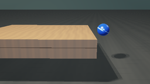
视觉工具实际返回图片 3
视觉工具实际返回图片 4
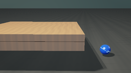
视觉工具实际返回图片 5
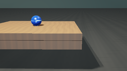
视觉工具实际返回图片 6
视觉工具实际返回图片 7
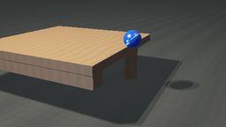
视觉工具实际返回图片 8
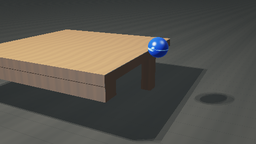
视觉工具实际返回图片 9
视觉工具实际返回图片 10
视觉工具实际返回图片 11
视觉工具实际返回图片 12
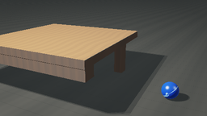
视觉工具实际返回图片 13
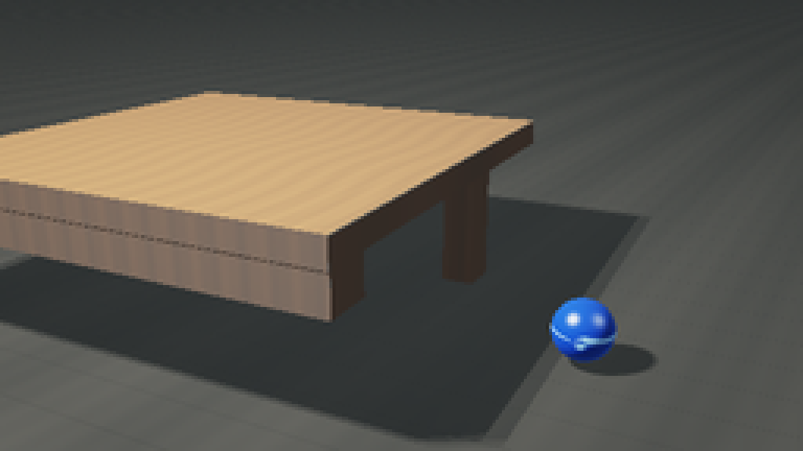
视觉工具实际返回图片 14
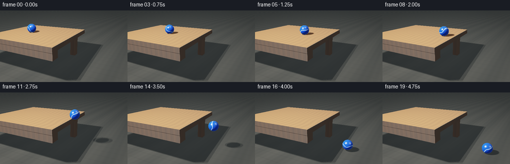
视觉工具实际返回图片 15
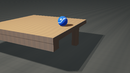
视觉工具实际返回图片 16
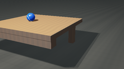
视觉工具实际返回图片 17

保存候选 3 份；完成命令 24 次；可验证图片返回 17 张。原始 API 响应与完整日志保留在本地。